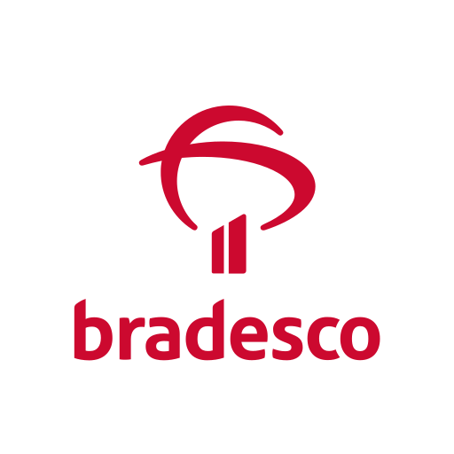
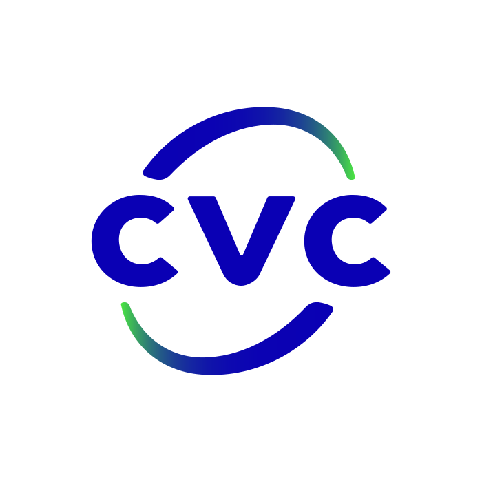
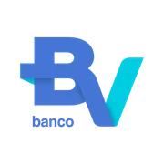
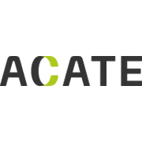

Repensando a Liderança:
Do Controle ao
Equilíbrio Dinâmico.
Soluções em educação corporativa e mentoria que aplicam a ciência e a filosofia à realidade do mercado, destravando a inteligência coletiva da sua empresa.

A Tríade Eutimia
A complexidade exige
uma nova postura.
Modelos tradicionais de gestão focados no controle linear frequentemente geram esgotamento ontológico e limitam a inovação. A Eutimia atua pelo caminho do meio: aplicando profundidade filosófica oriental e rigor científico da Gestão do Conhecimento diretamente às demandas práticas do mercado.
O resultado são ambientes com forte segurança psicológica, onde a adaptabilidade e o equilíbrio dinâmico substituem a força diretiva rígida, garantindo sustentabilidade e eficácia no longo prazo.
Caminhos de ação
Soluções para o Equilíbrio Dinâmico
Duas frentes complementares que atendem organizações e líderes em diferentes estágios da jornada.
Mapeamento de gaps e desenvolvimento de soluções sistêmicas para Organizações Intensivas em Conhecimento (OICs). O foco é construir uma cultura onde o conhecimento flui de forma orgânica, destravando a inteligência coletiva da equipe diante de cenários complexos.
Agendar Diagnóstico GratuitoEspaço seguro para o autocultivo como líder. Desenvolve a capacidade de sustentar a tensão entre a necessidade de resultados e a urgência do cuidado, liderando com integridade, adaptação e menor desgaste.
Agendar MentoriaProva social
O equilíbrio dinâmico na prática.
Resultados reais de líderes que transformaram suas formas de gerir, substituindo o desgaste pela fluidez e eficácia.
A Flávia é uma mentora incrível. Ela conduz muito bem a mentoria de uma forma simples, e a troca de informações e possibilidades é bem fluida e tranquila, com ótimos insights para o dia a dia.
Excelente, conseguiu ilustrar e exemplificar de forma clara soluções para o tema abordado. Obrigado pela comunicação clara e pelas soluções e ferramentas apresentadas — acredito que com a aplicação dos métodos vou conseguir dar seguimento na minha carreira de outra forma.
A mentoria foi excelente. A mentora foi muito sincera, animada e demonstrou total domínio do assunto. Recebi dicas práticas que já fazem sentido para o meu momento e, além disso, já saímos com um próximo passo bem definido. Gostei muito da troca e da forma como tudo foi conduzido.
Não ficamos apenas filosofando. A Flávia trouxe uma visão pragmática e soluções aplicáveis para conectar pontos que parecem não se resolver no dia a dia. Saio com um plano de ação claro para aplicar.
Profissionais e líderes de empresas como




Insights, práticas e pesquisa
A ciência e a prática em movimento.
A transformação estrutural de uma empresa começa pela livre circulação de ideias e por uma base sólida de pesquisa. Artigos científicos, capítulos de livros e reflexões sobre a interseção entre gestão do conhecimento, liderança e sustentabilidade.
Publicações Acadêmicas
Reflexões sobre gestão do conhecimento, liderança e sustentabilidade publicadas semanalmente.

Consultora de Liderança
Visão e expansão
A Eutimia como
ecossistema vivo.
Sou Flávia, fundadora da Eutimia, doutoranda e pesquisadora dedicada a traduzir a sabedoria filosófica e a gestão do conhecimento em práticas reais para o mercado. A Eutimia nasce da minha pesquisa aplicada, mas já opera com a visão de se tornar um ecossistema amplo.
Nosso objetivo para os próximos meses é construir uma rede ativa de parceiros e especialistas comprometidos com negócios que regeneram, sustentando a eficácia produtiva e o bem-estar de forma integral.


Filosofia em prática
A eficácia sustentável não força o caminho,
ela adapta o fluxo.